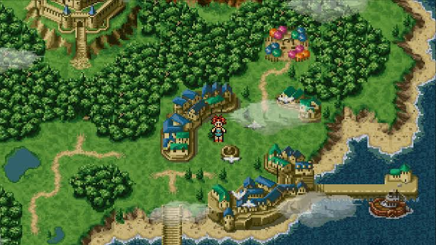

The story
A journey through history
When an unexpected encounter opens a path through time, a young hero and a remarkable group of friends set out to protect the future. Each era reveals a new place, a new ally, and another piece of a story built around friendship and courage.